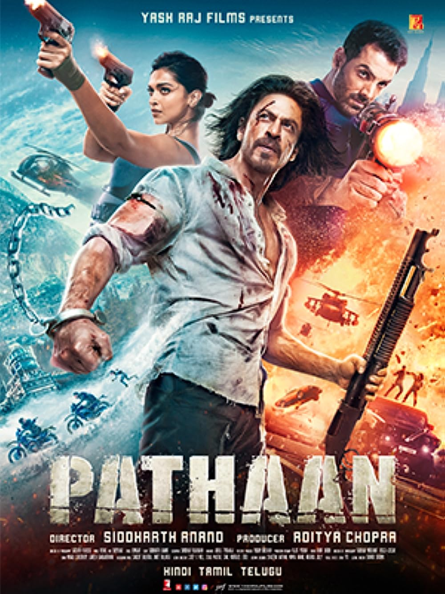

Pathaan Review: SRK Comeback

Rating:⭐⭐⭐
Welcome back SRK! After five years, you proved your point! Seeing you back in a more mass look, is what you
call the best comeback. Forget the subpar VFX, some illogical action scenes, mediocre music, just watch it for
SRK. Also this is a John Abraham comeback, as well, as he delivered a terrific villainous performance. Bollywood
should consider him as more of a villain selection, than a hero selection. This film is under the YRF Spy Universe
which sort of intrigues me, to see all the big Bollywood stars meet up. Also the Salman Khan cameo as Tiger, was
a huge treat! Overall, SRK Zinda Hai!